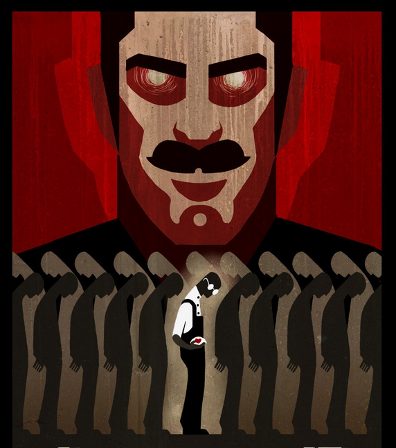

About the Intention of Valhalla
Valhalla is meant to serve as a directory for tools and tutorials that help you regain a necessary level of privacy.
The leaks of the last two years showed that governments around the globe knowingly flout the laws or constitutions to establish a network of global surveillance, which is unique in the history of humankind. In order to regain our freedom we see it as our task to place the necessary tools in your hands and give you advice on how to protect your privacy and freedom.
We regard privacy as a vital requirement for a free society as it allows individuals to discuss and express their opinions freely without worrying and the fear of harassment or any other form of oppression.
Consider this website as a statement against censorship and surveillance by serving you the weapons to defend and preserve you fundamental rights against oppressive governments.
We are the people.

Why the Name "Valhalla"?
In Norse mythology, Valhalla is a majestic, enormous hall located in Asgard, ruled over by the god Odin. Chosen by Odin, half of those who die in combat travel to Valhalla upon death. In Valhalla, the dead join the masses of those who have died in combat, as well as various legendary Germanic heroes and kings, as they prepare to aid Odin during the events of Ragnarök, which is known as "the doom or destruction of the gods" and includes a great battle, a mythical cycle, during which the cosmos is destroyed and is subsequently re-created.
The gods of today are our governments, which are often confused with our countries or homeland. They are the chosen entities that receive all our trust and loyality while depriving us of the most basic human rights, taking our property, removing our privacy and teaching us fear and hate for other people.
Statism is still the most dangerous religion and more powerful than ever as it operates on a global scale against the freedom of humanity.
Government spying programs are not meant to protect us citizens but to protect the ruling political class and their friends in big global corporations. Complete surveillance is a necessary condition for complete control.
What can I do?
Spread the word, help others in protecting their privacy and send us new and interesting tools.